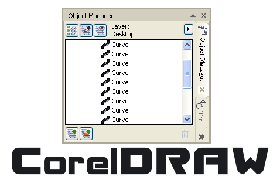
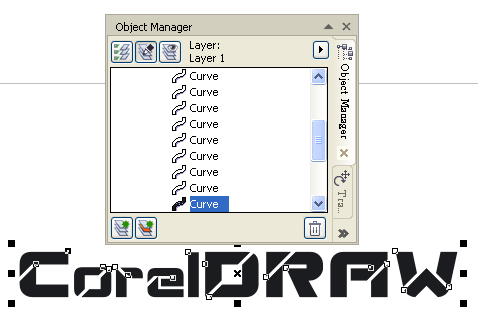
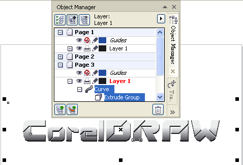
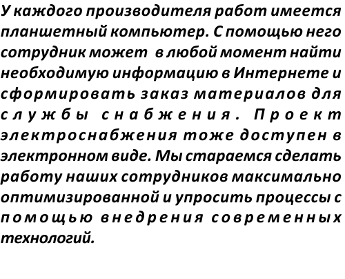

ВОПРОС / ОТВЕТ ДЛЯ НАЧИНАЮЩИХ
polzovatel-902 / 13.07.2010, 09:21/00:41
Форум:
Объясню на примере, чтоб было понятней... Открываю в кореле картинку (футболку с надписью) в формате JPG, мне нужно вытянуть из футболки надпись, т.е разъеденить файл... Говорят нужно формат изменить, еще что-то... Объясните, пожалуйста, что нужно сделать для этого...? Заранее спасибо.
Добрый день! Подскажите пожалуйста, у меня на ноутбуке установлен CorelDraw X6, я сохраняю готовый файл и пробую открыть его на компьютере на котором установлен CorelDraw X4 и у меня этот файл открывается просто чёрной картинкой, почему так происходит? формат же одинаковый, программы тоже (практически) или с файлами с Х6 нельзя работать в Х4?
Сохраните в X6 файл для версии X4. И открывайте его в X4. Все нормально откроется. За исключением каких-нибудь новых фишек. В общем, пробуйте.
Спасибо
Подскажите пож-та, как можно при наложении сетки из элипсов сверху на векторное изображение, сделать так, что бы эллипсы получили заливку цветом, который находится на фоновом слое непосредственно под этим самым эллипсом. Прилагаю фото. Заранее спасибо.
pawelt
1-й. способ это Combine (Ctrl+L), + удалить верхнии лишние объекты.
2-й. PawerClip, затем Break apart (Ctrl+K)
При попытке объединить все объекты в один(первый способ), корел зависает. Минут 20 подождал, результата нет. Оперативной памяти 16гб, процессор i7 3820.
Может, слабый комп и нужно ждать долго?
Подскажите, пожалуйста, как это сделать?
Картинка ваша совсем никудышная.
Но думаю, вот так:
Переводим текст в кривые

Добавляем косые штрихи и вычитаем их из силуэта надписи

Применяем к полученной фигуре эффект вытягивание и добавляем надписи градиент

Как заставить CDR в Parahraph Text увеличивать расстояние только между словами, при этом чтобы расстояния между буквами в словах было фиксированным, и не двигалось/увеличивалось? Необходимо чтобы было как на картинке
Justification Settings не помогает, или что-то не так делаю. Выставляю ноль в Max. char spacing - реакции нет.
Не устраивает как на следующей картинке, особенно это видно на 6 строке

otonel,
выделить текст - и включить режим редактирования узлов Shape Tools (F10) - если просто тянуть за маркер - будет увеличиваться расстояние между символами - если с зажатым Shift - то будет увеличиваться межсловное расстояние
Страницы